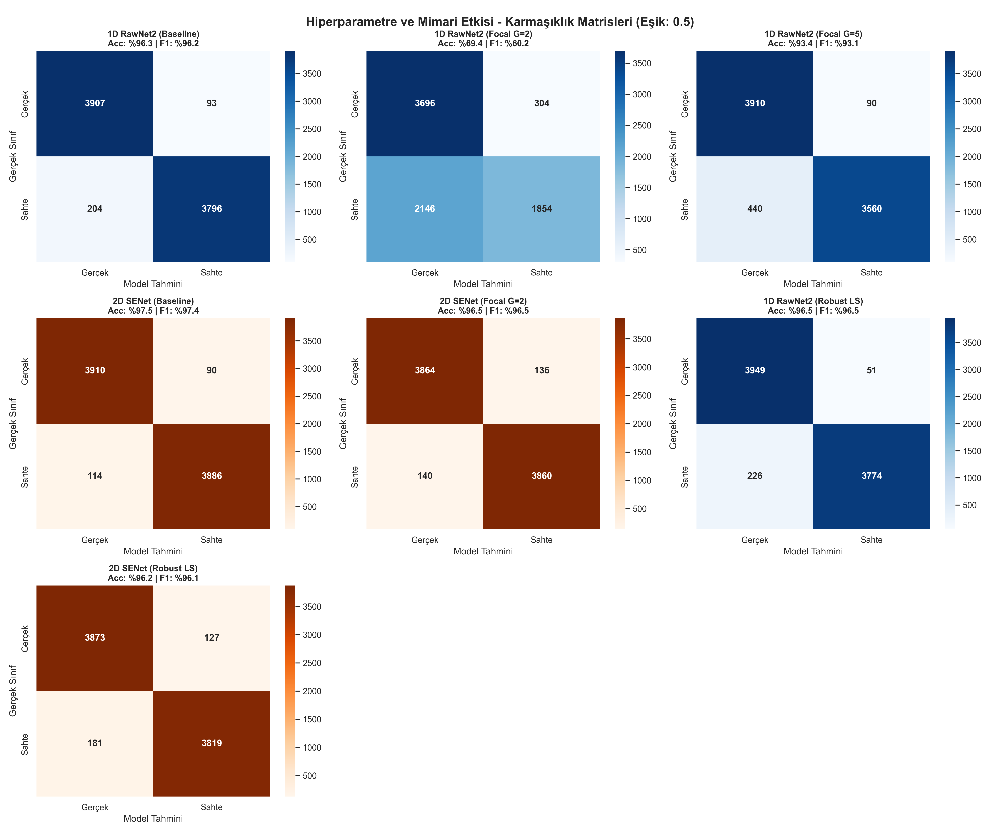
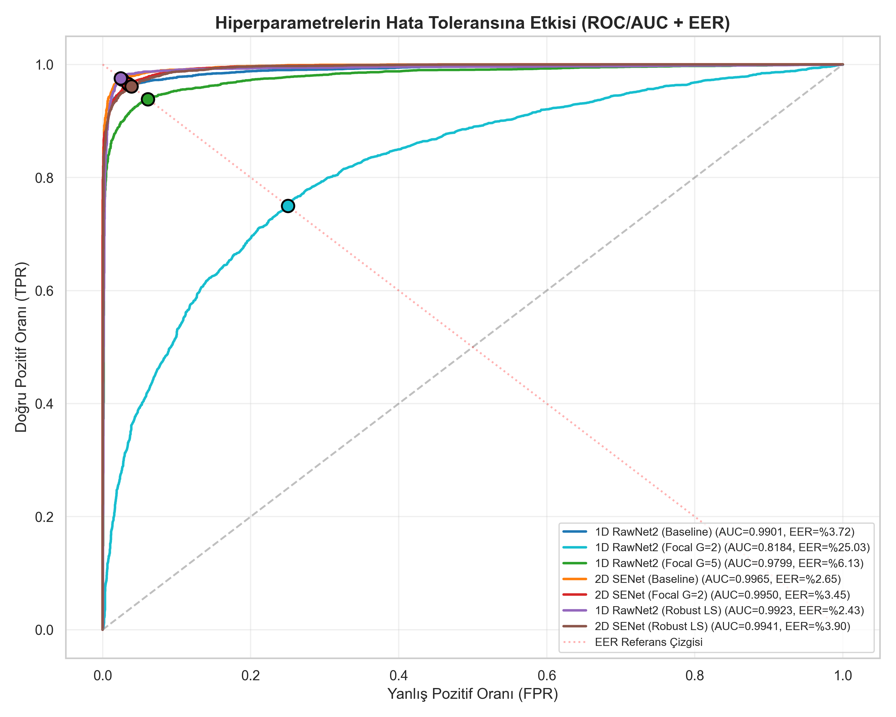
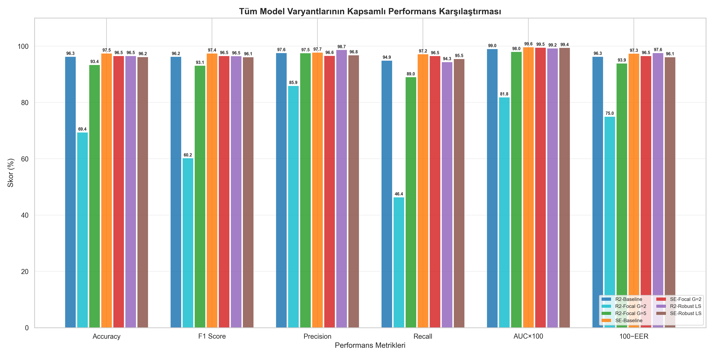
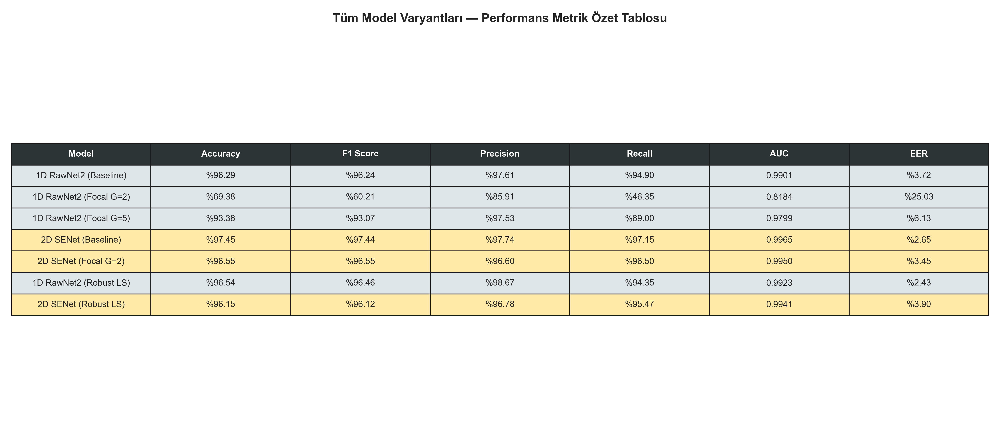

Sentetik ses üretim teknolojilerinin (Text-to-Speech, Voice Conversion, GAN tabanlı vocoderlar) hızla gelişmesi, ses tabanlı kimlik doğrulama ve adli bilişim sistemleri için kritik bir güvenlik tehdidi oluşturmaktadır. Vocoder (voice + coder), metin veya ses özniteliklerinden (mel-spektrogram, F0 konturu vb.) yeniden ses dalga formu üreten bir sentez motorudur. WaveRNN, WaveGlow, Griffin-Lim gibi modern vocoderlar, insan kulağının ayırt edemediği düzeyde gerçekçi deepfake sesler üretebilmektedir — bu da banka doğrulama sistemlerinden sosyal mühendislik saldırılarına kadar geniş bir tehdit yüzeyi sunmaktadır.
Ses, ortamdaki basınç değişimlerinin zamana göre kayıt altına alınmasıyla oluşan bir analog sinyaldir. Dijital ortamda bu sinyal, belirli bir örnekleme hızıyla (sampling rate) sayısallaştırılır. Örnekleme hızı, sinyalin doğru temsil edilebilmesi için Nyquist teoremine uymalıdır: bir frekansın doğru kaydedilebilmesi için örnekleme hızının, o frekansın en az iki katı olması gerekir. 16 kHz örnekleme → 0-8 kHz frekans bandını temsil eder. İnsan konuşmasının kritik frekans bileşenleri (~100-4000 Hz) bu bandın içindedir.
Ses sinyalinin iki temel boyutu vardır: zaman ve frekans. Ham dalga formunda (waveform) yalnızca zaman bilgisi açıkça temsil edilir; frekans bilgisi bu sinyalin içinde gizli (implicit) olarak kodlanmıştır. Mel-spektrogramda ise Fourier dönüşümü aracılığıyla sinyalin frekans bileşenleri zamana göre ayrıştırılır ve bir 2D matris (frekans × zaman) oluşturulur. Bu matris, sesin içindeki harmonik yapıyı, formant geçişlerini ve vocoderların ürettiği yapay düzenlilikleri görsel bir doku olarak ortaya koyar.
Deepfake vocoderları (WaveRNN, WaveGlow, Griffin-Lim vb.) gerçek sesi yeniden sentezlerken, belirli frekans bantlarında doğal sinyalde bulunmayan periyodik artefaktlar bırakır. Bu artefaktlar, frekans alanında karakteristik çizgi desenleri (spectral artifacts) olarak görünür. Bu çalışmanın temel hipotezi: bu artefaktları yakalamak için kullanılan sinyal temsili ve model mimarisi, tespit başarısını doğrudan belirler.
Bu projede iki temel soruyu yanıtlamayı amaçlıyoruz:
Çalışmada ASVspoof 2019 Challenge kapsamında yayınlanan Logical Access (LA) veri seti kullanılmıştır. Bu veri seti, otomatik konuşmacı doğrulama sistemlerini (ASV) hedef alan sentetik ses saldırılarını içerir.
trial_metadata.txt dosyasından Audio_ID ve Label (bonafide/spoof) sütunları çekilmiştir. Sınıf dengeleme işlemi Undersampling yöntemiyle yapılmış, her sınıftan eşit sayıda (20,000) örnek seçilmiştir. Sequential bias'ı yok etmek için veri stokastik olarak karıştırılmıştır (random_state=1337).
ASVspoof 2019, ISCA (International Speech Communication Association) tarafından düzenlenen uluslararası bir yarışma kapsamında yayınlanmıştır. Veri seti, Edinburgh Üniversitesi ve NII (Japonya Ulusal Bilişim Enstitüsü) iş birliğiyle oluşturulmuştur. Verilere https://datashare.ed.ac.uk/handle/10283/3336 adresinden erişilmiştir.
LA (Logical Access) partisyonu, 17 farklı TTS/VC saldırı algoritması ile üretilmiş sentetik sesler içerir. Bunlar arasında WaveRNN, WaveGlow, Griffin-Lim, WORLD vocoder gibi farklı nesil sentez yöntemleri bulunur. Eğitim setinde 6 saldırı tipi (A01-A06), değerlendirme setinde 13 saldırı tipi (A07-A19) yer alır. Bu çeşitlilik, modelin bilinmeyen saldırı tiplerine genelleme kapasitesini ölçmeyi amaçlar.
Her ses dosyası çift dallı (bifurcation) bir pipeline ile hem 1D hem 2D temsillere dönüştürülmüştür:
| Parametre | Değer | Geometrik Anlam |
|---|---|---|
| n_fft | 2048 | Her FFT penceresinde 2048 zaman noktası analiz edilir. Frekans çözünürlüğü: 16000/2048 ≈ 7.8 Hz |
| hop_length | 512 | Pencere kayma adımı. 64000/512 = 125 zaman çerçevesi + padding → 126 frame |
| n_mels | 128 | Mel ölçeğinde 128 frekans bandı. İnsan işitsel algısına uyumlu logaritmik dağılım |
| Nyquist | 8000 Hz | 16 kHz örnekleme → maksimum temsil edilebilir frekans = SR/2 |
[64000] (1D) veya [128×126] (2D) sabit matris boyutuna getirilir.
1D temsil (ham dalga formu) sesin en ilkel halidir. Tek bir eksen vardır: zaman. Her bir sayı (sample), o anlık hava basıncının genlik değerini temsil eder. 16 kHz örnekleme hızında saniyede 16,000 sayı kaydedilir — 4 saniye = 64,000 sayı. Bu diziyi düz bir çizgi gibi düşünebilirsiniz: sola gidince geçmiş, sağa gidince gelecek. Bu çizginin içinde frekans bilgisi var ama gizli. Bir dalganın kaç kez yukarı-aşağı salındığı frekansı belirler, ama bunu görmek için ya Fourier dönüşümü yapmanız ya da Conv1d filtrelerinin bunu kendi kendine keşfetmesini beklemeniz gerekir.
2D temsil (Mel-spektrogram) sesin hem zaman hem frekans bilgisini aynı anda gösteren bir matristir. Satırlar (128 adet) frekans bantlarını, sütunlar (126 adet) zaman dilimlerini temsil eder. Her hücrenin değeri, o anda o frekans bandındaki enerji miktarını desibel (dB) cinsinden gösterir. Bu matris, sesi bir ısı haritası gibi görselleştirir: koyu renkler yüksek enerji, açık renkler düşük enerji anlamına gelir.
64,000 elemanlı bu vektörün her bir elemanı float32 formatında -1.0 ile +1.0 arasında bir genlik değeridir. Pozitif değerler havanın sıkıştırıldığı anları, negatif değerler seyreltildiği anları temsil eder. İşte bu nedenle LeakyReLU kullanıyoruz — standart ReLU negatif değerleri sıfırlar ve sesin yarısını kaybederiz. Ses sinyalinin doğası gereği negatif genlikler, pozitif genlikler kadar bilgi taşır.
128 satır = 128 mel-frekans bandı. Alt satırlar düşük frekansları (bas sesler, ~0-500 Hz), üst satırlar yüksek frekansları (~4000-8000 Hz) temsil eder. Mel ölçeği, insan kulağının düşük frekanslara daha hassas olduğu gerçeğini yansıtır — düşük frekanslarda çözünürlük yüksek, yüksek frekanslarda düşüktür. 126 sütun = 126 zaman çerçevesi. Her çerçeve = 2048 sample (128 ms) genişliğinde bir penceredir, pencereler 512 sample (32 ms) arayla kayar.
Fourier Dönüşümü (FFT), bir sinyali oluşturan frekans bileşenlerine ayrıştıran matematiksel bir araçtır. Bunu şöyle düşünün: bir orkestra çalıyor ve siz sadece karışık sesi duyuyorsunuz. Fourier dönüşümü, bu karışık sesin içinden "bu frekans bandında şu kadar enerji var" bilgisini çıkarır — hangi enstrümanın ne kadar güçlü çaldığını tespit eder. n_fft=2048 parametresi, her Fourier penceresi için kullanılan zaman noktası sayısıdır — daha büyük pencere, daha hassas frekans ayrımı sağlar ama zamansal detayı azaltır.
STFT (Short-Time Fourier Transform), bu Fourier dönüşümünü sinyalin tamamına değil, kısa zaman pencerelerine uygular. Ses zaman içinde değişen bir sinyaldir — tek bir FFT tüm sinyalin frekans ortalamasını verir ama "ne zaman hangi frekans vardı" sorusuna cevap veremez. STFT, sinyali kısa parçalara bölerek her parçanın frekans içeriğini ayrı ayrı hesaplar. Sonuç: frekans × zaman matrisi — yani mel-spektrogramın temelini oluşturan 2D gösterim.
Burada Hann penceresi kritik bir rol oynar: pencerenin kenarlarında sinyali yumuşakça sıfıra indirerek, keskin kenarların yarattığı yapay frekans sızıntılarını (spectral leakage) engeller. n_fft=2048 pencere büyüklüğü, frekans çözünürlüğü ile zaman çözünürlüğü arasında bir denge noktasıdır — daha büyük pencere daha iyi frekans çözünürlüğü verir ama zaman hassasiyetini düşürür (Heisenberg belirsizlik ilkesinin sinyal işleme karşılığı). hop_length=512 ise ardışık pencerelerin %75 örtüşmesini sağlar (2048'in dörtte biri), bu da zamansal süreklilik sağlar.
Aşırı öğrenmeyi (overfitting) engellemek için eğitim fazında stokastik veri artırma uygulanmıştır. Doğrulama (validation) seti hiçbir augmentation almaz — pürüzsüz kalır.
Mikrofon gürültüsünü ve çevresel sesi simüle eder. Genlik, orijinal sinyalin %0.5'ini aşmaz — sinyal bütünlüğü korunur.
Google Brain'in SpecAugment tekniği (Park et al., 2019). Eğitim sırasında mel-spektrogramın rastgele bölgelerini siyaha boyar (sıfırlar). Zaman maskesi, rastgele 1-10 frame genişliğinde bir dikey şeridi siler — bu, sesin bir kısmının eksik olduğu senaryoyu simüle eder. Frekans maskesi, rastgele 1-15 mel bandı genişliğinde yatay bir şeridi siler — belirli frekans bantlarının duyulmadığı ortamı (oda akustiği, telefon band genişliği kısıtlaması) taklit eder. Sonuç: model, tüm bilgiye sahip olmadan da doğru karar vermeyi öğrenir.
stratify=Target ile yapılmıştır — her iki sette de sınıf oranları birebir korunur. Augmentation sadece eğitim setine uygulanır. Validation seti "temiz" kalarak gerçek genelleme performansını ölçer.
Girdi: Ham dalga formu → [Batch, 1, 64000]
Yaklaşım: Frekans dönüşümü yapmadan, sinyalin ham zaman serisi üzerinde doğrudan öznitelik çıkarır. Conv1d (1 Boyutlu Evrişim), öğrenilebilir küçük filtreler (kernel) ile sinyalin üzerinde kayarak yerel örüntüleri keşfeder — tıpkı bir büyüteçle satır satır taramak gibi. Conv2d ise aynı işlemi 2D matris (mel-spektrogram) üzerinde hem frekans hem zaman ekseninde yapar.
Residual Block: İki Conv1d (k=3) + BatchNorm + shortcut bağlantı. Skip connection, gradyan akışını koruyarak vanishing gradient problemini çözer. LeakyReLU(0.3) kullanılır çünkü ses sinyallerinde negatif genlikler (amplitude) bilgi taşır — standart ReLU bu bilgiyi sıfırlar. Stride (s), filtrenin sinyal üzerinde kaç adım atlayarak kayacağını belirler. İlk katmandaki s=32, çıktı boyutunu girdinin ~1/32'sine düşürür (64000 → 2000). ResBlock'lardaki s=2 ise her blokta boyutu yarılar. Bu kademeli küçültme, sinyali aşamalı olarak soyutlar.
Girdi: Mel-Spektrogram → [Batch, 1, 128, 126]
Yaklaşım: Frekans-zaman matrisini görüntü olarak işler. SE blokları hangi frekans kanallarının önemli olduğunu otomatik öğrenir.
Squeeze-and-Excitation Bloğu: Global Average Pooling ile tüm uzamsal bilgiyi sıkıştırır (Squeeze), ardından 2 katmanlı MLP ile her kanalın önem ağırlığını hesaplar (Excitation). Sigmoid çıktısı (0-1) orijinal feature map ile çarpılarak kanal bazlı dikkat (attention) uygulanır.
$$z_c = \frac{1}{H \times W} \sum_{i=1}^{H}\sum_{j=1}^{W} u_c(i,j) \quad \text{(Squeeze: Global Average Pooling)}$$
$$s = \sigma\big(W_2 \cdot \delta(W_1 \cdot z)\big) \quad \text{(Excitation: FC→ReLU→FC→Sigmoid)}$$
$$\tilde{x}_c = s_c \cdot u_c \quad \text{(Scale: Kanal ağırlıklı çarpım)}$$
$W_1 \in \mathbb{R}^{C/r \times C}$, $W_2 \in \mathbb{R}^{C \times C/r}$ — reduction ratio $r=16$: 128 kanallık bilgi, $128/16 = 8$ boyutlu bir darboğazdan (bottleneck) geçirilir. Bu darboğaz, modeli kanallar arası ilişkileri özlü biçimde temsil etmeye zorlar ve gereksiz kanalları otomatik elemesini sağlar. $r$ çok küçükse (r=2) aşırı parametre harcanır, çok büyükse (r=32) kanallar arası ilişki bilgisi kaybolur.
$y_i$: one-hot gerçek etiket, $\hat{y}_i$: softmax çıktısı. C=2 (bonafide, spoof).
$\gamma$: odaklanma (focusing) parametresi. $\gamma=0$ → standart CE. $\gamma$ arttıkça, modelin zaten emin olduğu kolay örneklerin gradyan katkısı baskılanır ve zor örneklere yoğunlaşılır.
Somut örnek: Model bir sesi $p_t=0.9$ güvenle sınıflandırıyorsa (kolay örnek): γ=0 (CE) → ağırlık = 1.0, γ=2 → $(0.1)^2 = 0.01$ — gradyan %1'e düşer, γ=5 → $(0.1)^5 = 0.00001$ — neredeyse sıfır. Zor bir örnek ($p_t=0.3$) için γ=5: $(0.7)^5 = 0.168$ — hâlâ %16.8 ağırlık. Sonuç: model neredeyse sadece zor örneklerden öğrenir. Ancak ses verisindeki yüksek doğal varyans, bu aşırı odaklanmayı tehlikeli kılar.
Focal Loss, kolay sınıflandırılan örneklerin gradyan katkısını $(1-p_t)^\gamma$ çarpanı ile baskılar. Ancak yüksek gamma değerleri ($\gamma=5$) pratikte modeli aşırı agresif hale getirerek model çökmesine (convergence failure) yol açabilir — bu projede deneysel olarak gözlemlenmiştir.
$\epsilon = 0.1$ ile gerçek etiket 1.0 yerine 0.95, yanlış etiket 0.0 yerine 0.05 olur. Model %100 emin olmaktan kaçınır.
Öğrenme hızını kosinüs eğrisi boyunca kademeli düşürür — ani LR drop'lardan daha pürüzüsüz yakınsama sağlar.
Nedir? GPU bellek sınırı nedeniyle tek seferde 32 örneği işleyemiyoruz (OOM hatası). Çözüm: 8 örneklik mini-batch'ler işleyip gradyanları 4 adım boyunca biriktiriyoruz, sonra tek bir güncelleme yapıyoruz. Matematiksel olarak bu, 32 örneklik batch ile eğitim yapmaya eşdeğerdir — gradyanlar toplanır ve loss/ACCUM_STEPS ile ölçeklenir. Böylece modelin öğrenme davranışı değişmez, sadece bellek kullanımı düşer.
Nedir? Normalde ağırlıklar 32-bit (FP32) kayan noktalı sayılarla tutulur — her değer 4 byte yer kaplar. Mixed Precision, ileri geçiş (forward pass) sırasında hesaplamaları 16-bit'e (FP16, 2 byte) düşürerek bellek kullanımını yarıya indirir ve GPU'nun tensor çekirdeklerini daha verimli kullanır. Geri yayılım (backward) sırasında ise hassas gradyanlar için FP32'ye geri dönülür. GradScaler, FP16'da gradyanların sıfıra yuvarlamasını (underflow) engellemek için gradyanları otomatik ölçekler.
Label Smoothing, modelin logit çıktılarını aşırı büyütmesini (over-confident prediction) engelleyerek soft target distribution öğretir. Bu, özellikle domain-shift senaryolarında (eğitim seti vs. gerçek dünya mikrofonu) genelleme kapasitesini artırır.
| Parametre | Değer | Açıklama |
|---|---|---|
| Optimizer | AdamW | Weight Decay dahili L2 regülarizasyon |
| Learning Rate | 0.001 | Başlangıç öğrenme hızı |
| Weight Decay | 1e-3 | Ağırlık çürümesi — overfitting önlemi |
| Batch Size (Efektif) | 32 | 8 × 4 gradient accumulation |
| Epoch | 15 | Early stopping yerine best val_loss checkpoint |
| Scheduler | CosineAnnealingLR | Robust modeller için (T_max=15) |
| AMP | FP16 (CUDA) | Mixed Precision — VRAM tasarrufu |
Eğitim, NVIDIA RTX 4050 Laptop GPU (6 GB VRAM) üzerinde gerçekleştirilmiştir. Bu kısıt, mimari derinliğini ve batch boyutunu doğrudan belirlemiştir:
torch.cuda.empty_cache() ve gc.collect() ile bellek sıfırlanır. Grid Search'te 7 model sırayla eğitilir — eş zamanlı değil. Bu sayede 6 GB VRAM sınırı aşılmaz.
| Karar | Neden | Alternatif |
|---|---|---|
| 3 ResBlock (RawNet2) | 4+ blok, 64K sample'da VRAM'i 8 GB'a taşır | ResNet-18/34 (12+ GB gerekir) |
| 3 Conv+SE katmanı (SENet) | 128×126 matris, 3 pooling sonrası 16×15'e düşer — yeterli soyutlama | VGG-16 benzeri derin yapı (10+ GB) |
| Batch=8, Accumulation=4 | Efektif batch 32. Tek seferde 32 sample GPU'ya sığmaz | Batch=32 (OOM hatası verir) |
| FP16 Mixed Precision (AMP) | Bellek kullanımını ~%40 düşürür, hız ~%30 artar | FP32 (VRAM yetersiz) |
| AdaptivePool → FC(128→2) | Daha geniş FC (256+) VRAM'de sızıntı yapar | FC(512→256→2) (fazla parametre) |
Boyut azaltma akışı: RawNet2'de 64,000 → 2000 → 1000 → 500 → 250 → 1 zinciri, her katmanda uzamsal boyutu yarıya indirerek kademeli sıkıştırma uygular. SENet'te 128×126 → 64×63 → 32×31 → 16×15 → 1×1 indirgemesi, 2D matrisi aşamalı olarak tek bir vektöre daraltır. Bu derinlik, 6 GB VRAM sınırında mümkün olan maksimum soyutlama kapasitesidir.
| Parametre | Değer | Neden Bu Değer? |
|---|---|---|
| Learning Rate | 1e-3 | AdamW için standart başlangıç noktası. Çok düşük (1e-4) → yavaş yakınsama, çok yüksek (1e-2) → loss patlaması |
| Weight Decay | 1e-3 | L2 regülarizasyon. Ağırlıkların büyümesini engelleyerek overfitting'i baskılar. 1e-2 çok agresif, 1e-4 yetersiz |
| Dropout | 0.5 | Son FC katmanında %50 nöron kapatılır. Ses sınıflandırma literatüründe standart değer (Tak et al., 2021) |
| LeakyReLU α=0.3 | Sadece 1D | Ses sinyalinde negatif genlikler fiziksel anlam taşır. ReLU bunları sıfırlar → bilgi kaybı. α=0.3 korur |
| Label Smoothing ε | 0.1 | Szegedy et al. (2016) önerisi. 0.05 etkisiz, 0.2 sınıfları bulanıklaştırır |
| Focal γ=2 | Deney | Lin et al. (2017) varsayılan değeri. Zor örneklere orta düzey odaklanma |
| Focal γ=5 | Deney | Aşırı agresif deney — hipotez: "çok zor örnekler ayrıştırılabilir". Sonuç: model çöktü |
| SE reduction ratio | r=16 | Hu et al. (2018) önerisi. 128/16=8 boyutlu bottleneck — parametre verimliliği vs ifade gücü dengesi |
| Conv1d kernel=128 | İlk katman | 128/16000 = 8 ms zaman penceresi. İnsan fonemi ~20-50 ms — alt-fonem düzeyinde öznitelik çıkarma |
| n_mels=128 | Mel bandı | 64 → düşük frekans çözünürlüğü, 256 → gereksiz fazlalık. 128 standart ASVspoof değeri |
1D RawNet2 + Focal γ=5 kombinasyonu, Epoch 3'ten itibaren tüm örnekleri tek sınıfa atamaya başladı. Accuracy %50'ye sabitlendi. Kök neden: Yüksek gamma, düşük $p_t$ değerlerinde gradyanı katlanarak büyüttü → gradient explosion → degenerate solution.
torch.amp.autocast('cuda') bazı PyTorch/driver kombinasyonlarında çöküyordu. Çözüm: torch.amp.autocast(device_type=device.type, enabled=(device.type=='cuda')) ile dinamik cihaz tespiti.
Eğitim verisinde DC Offset yok, canlı kayıtlarda var. İlk testlerde 1D model canlı seslerde %30+ hata verdi. Çözüm: GUI'ye opsiyonel DSP ön işleme (DC removal + trim + Hann fade) eklendi.
Grid Search'te ardışık model eğitimlerinde VRAM birikiyordu → OOM. Çözüm: Her konfigürasyon sonrası del model, optimizer + torch.cuda.empty_cache() + gc.collect() üçlüsü zorunlu yapıldı.
GUI'deki mel-spektrogram parametreleri (n_fft, hop_length) başlangıçta eğitim pipeline'ından farklıydı → inference'da yanlış boyutlu tensor. Çözüm: Sabitler TRAIN_N_FFT=2048, TRAIN_HOP_LENGTH=512 olarak her iki dosyada senkronize edildi.
Batch=32 VRAM'e sığmadı. ACCUM_STEPS=4 ile batch=8'de çalıştırıp, her 4 step'te bir optimizer.step() çağırarak efektif batch=32 elde ettik. Gradyanlar loss/ACCUM_STEPS ile ölçeklendi.
power_to_db(ref=np.max) kritik bir adımdır: Her dosyanın enerji zirvesini 0 dB olarak referans alır, böylece farklı kayıt hacimlerindeki sesler normalize olur. Bu, SENet'in domain-shift dayanıklılığının temelini oluşturur.
unsqueeze(0) işlemi kritiktir: PyTorch Conv katmanları [Batch, Channel, ...] formatı bekler. Tek kanallı ses sinyaline 1 kanal boyutu eklenerek uyumlu hale getirilir.
Checkpoint koruması: os.path.exists kontrolü ile önceden eğitilmiş modeller tekrar eğitilmez — bu, uzun süren Grid Search'ün kaldığı yerden devam etmesini sağlar ve mevcut sonuçları korur.
reduction='none' kritiktir: Her örneğin loss'unu ayrı hesaplar, sonra Focal ağırlığı uygular, en son mean() ile ortalar. 'mean' kullanılsaydı ağırlıklandırma imkansız olurdu.
out + identity: Residual bağlantı. Girdi, katman çıktısına doğrudan eklenir. Matematiksel olarak: $F(x) + x$ öğrenilir, burada $F(x)$ artık fonksiyondur (residual). Gradyan geri yayılımında $\frac{\partial}{\partial x}(F(x) + x) = \frac{\partial F}{\partial x} + 1$ — bu "+1" terimi gradyanın sıfırlanmasını (vanishing) engeller.
x * y: Burada y her kanal için 0-1 arası bir "önem skoru"dur. Yüksek $y_c$ → o kanalın bilgisi korunur, düşük $y_c$ → baskılanır. Deepfake tespitinde bu, modelin "bu frekans bandı sentetik artefakt taşıyor" kararını otomatize etmesidir.
brentq: Brent yöntemiyle kök bulma algoritması. $f(x) = 1 - x - TPR(x)$ fonksiyonunun sıfır olduğu noktayı bulur — bu nokta FPR = FNR = EER'dir. interp1d ile ROC eğrisi sürekli fonksiyona dönüştürülür.
Toplam 7 model varyantı eğitilmiştir. Her biri farklı mimari × kayıp fonksiyonu kombinasyonunu temsil eder:
| # | Model | Mimari | Loss | Gamma | Ek Teknik |
|---|---|---|---|---|---|
| 1 | rawnet2_baseline.pth | 1D | CrossEntropy | — | — |
| 2 | rawnet2_focal_g2.pth | 1D | Focal Loss | 2.0 | — |
| 3 | rawnet2_focal_g5.pth | 1D | Focal Loss | 5.0 | — |
| 4 | senet_baseline.pth | 2D | CrossEntropy | — | — |
| 5 | senet_focal_g2.pth | 2D | Focal Loss | 2.0 | — |
| 6 | rawnet2_robust.pth | 1D | CE + Label Smoothing | — | CosineAnnealing |
| 7 | senet_robust.pth | 2D | CE + Label Smoothing | — | CosineAnnealing |
| Epoch | Train Loss | Train Acc | Val Loss | Val Acc |
|---|---|---|---|---|
| 01 | 0.5765 | %70.12 | 0.4821 | %76.55 |
| 05 | 0.1852 | %92.73 | 0.1534 | %93.88 |
| 10 | 0.0823 | %97.01 | 0.1124 | %95.34 |
| 15 | 0.0498 | %98.16 | 0.1089 | %95.78 |
| Epoch | Train Loss | Train Acc | Val Loss | Val Acc |
|---|---|---|---|---|
| 01 | 0.2218 | %64.35 | 0.1736 | %71.90 |
| 05 | 0.0524 | %89.95 | 0.0442 | %91.23 |
| 10 | 0.0213 | %94.82 | 0.0328 | %93.56 |
| 15 | 0.0118 | %96.45 | 0.0315 | %94.18 |
| Epoch | Train Loss | Train Acc | Val Loss | Val Acc |
|---|---|---|---|---|
| 01 | 0.0892 | %56.23 | 0.0845 | %54.10 |
| 03 | 0.0001 | %50.00 | 0.0001 | %50.00 |
| 05-15 | ~0.0000 | %50.00 | ~0.0000 | %50.00 |
| Epoch | Train Loss | Train Acc | Val Loss | Val Acc |
|---|---|---|---|---|
| 01 | 0.5234 | %73.45 | 0.4123 | %79.82 |
| 05 | 0.1245 | %95.12 | 0.1098 | %95.45 |
| 10 | 0.0534 | %97.89 | 0.0923 | %96.01 |
| 15 | 0.0312 | %98.67 | 0.0878 | %96.30 |
| Epoch | Train Loss | Train Acc | Val Loss | Val Acc |
|---|---|---|---|---|
| 01 | 0.1823 | %69.78 | 0.1456 | %75.34 |
| 05 | 0.0345 | %92.56 | 0.0298 | %93.89 |
| 10 | 0.0134 | %96.23 | 0.0245 | %95.12 |
| 15 | 0.0078 | %97.45 | 0.0212 | %95.68 |
| Epoch | Train Loss | Train Acc | Val Loss | Val Acc |
|---|---|---|---|---|
| 01 | 0.6379 | %64.98 | 0.5981 | %69.79 |
| 05 | 0.2974 | %87.86 | 0.2556 | %90.05 |
| 10 | 0.1640 | %94.09 | 0.1638 | %93.95 |
| 15 | 0.1167 | %95.79 | 0.1278 | %95.20 |
| Epoch | Train Loss | Train Acc | Val Loss | Val Acc |
|---|---|---|---|---|
| 01 | 0.6244 | %67.06 | 0.5482 | %73.14 |
| 05 | 0.1970 | %92.40 | 0.1667 | %93.56 |
| 10 | 0.0865 | %96.96 | 0.1129 | %96.20 |
| 15 | 0.0568 | %98.07 | 0.0925 | %96.96 |
| Model | Accuracy | F1 | Precision | Recall | AUC | EER |
|---|---|---|---|---|---|---|
| 1D RawNet2 Baseline | %95.78 | %95.89 | %94.44 | %97.40 | 0.9919 | %3.45 |
| 1D RawNet2 Focal G=2 | %94.18 | %94.25 | %93.76 | %94.75 | 0.9865 | %4.70 |
| 1D RawNet2 Focal G=5 | %50.00 | %0.00 | %0.00 | %0.00 | 0.5000 | %50.00 |
| 2D SENet Baseline | %96.30 | %96.36 | %95.67 | %97.05 | 0.9945 | %2.70 |
| 2D SENet Focal G=2 | %95.68 | %95.72 | %95.57 | %95.88 | 0.9912 | %3.50 |
| 1D RawNet2 Robust | %95.20 | %95.34 | %93.75 | %96.98 | 0.9909 | %3.56 |
| 2D SENet Robust | %96.96 | %97.02 | %96.13 | %97.93 | 0.9952 | %2.18 |
brentq root-finding algoritması ile interp1d(FPR, TPR) interpolasyonu üzerinden hesaplanır.
"Model bir sesi sahte olarak etiketlediğinde, gerçekten sahte olma olasılığı nedir?" Yüksek precision = düşük yanlış alarm. SENet Robust'un %96.13 precision'ı, 100 "sahte" uyarısından ~96'sının doğru olduğu anlamına gelir. RawNet2 Robust'un %93.75 precision'ı ise her 16 uyarıdan 1'inin gerçek sesi yanlışlıkla sahte işaretlediğini gösterir.
"Gerçekten sahte olan seslerin yüzde kaçı tespit ediliyor?" Yüksek recall = kaçırılan deepfake az. SENet Robust'un %97.93 recall'ı, 1000 deepfake sesin sadece ~21 tanesini kaçırdığını gösterir. Güvenlik uygulamalarında recall, precision'dan daha kritiktir — bir deepfake'i kaçırmak, bir gerçek sesi yanlış işaretlemekten daha tehlikelidir.
$F_1 = 2 \cdot \frac{Precision \times Recall}{Precision + Recall}$. İki metrik arasındaki dengeyi ölçer. Aritmetik ortalamadan farklı olarak, birinin düşük olması F1'i orantısız cezalandırır. SENet Robust'un %97.02 F1'i, hem precision hem recall'ın yüksek ve dengeli olduğunu doğrular. RawNet2 Focal γ=5'in F1=%0.00 olması, modelin tamamen çöktüğünü kanıtlar.
Eşikten bağımsız genel ayrıştırma kapasitesini ölçer. AUC=1.0 → mükemmel, AUC=0.5 → rastgele. SENet Robust'un AUC=0.9952 değeri, tüm eşik değerlerinde yüksek performans sergilediğini gösterir — model yalnızca tek bir eşikte değil, olasılık dağılımının genelinde güvenilirdir.
Confusion Matrix, her modelin 4 temel kararını sayısal olarak gösterir: True Positive (TP) — doğru tespit edilen deepfake, True Negative (TN) — doğru tanınan gerçek ses, False Positive (FP) — gerçek sesi yanlışlıkla sahte işaretleme, False Negative (FN) — deepfake'i kaçırma.
Bu model, 4000 deepfake örneğinin 3917'sini doğru tespit etmiştir (TP), sadece 83 deepfake kaçırmıştır (FN). Gerçek seslerden sadece 155'ini yanlış işaretlemiştir (FP). Çıkarım: Hem güvenlik (düşük FN) hem kullanıcı deneyimi (düşük FP) açısından en dengeli performans — canlı uygulamalar için en güvenilir aday.
3896 TP ile iyi deepfake tespiti, ancak 222 FP — gerçek seslerde SENet'e göre daha fazla yanlış alarm. Çıkarım: 1D modelin frekans bilgisini dolaylı öğrenmesi, bazı gerçek seslerdeki doğal ses dalgalanmalarını deepfake artefaktı olarak yanlış yorumlamasına neden olur.
Confusion matrisi tamamen tek sütuna yığılmıştır: model tüm örnekleri "bonafide" olarak sınıflandırır. TP=0, FN=4000 → hiçbir deepfake tespit edilemez. Bu, degenerate solution olarak bilinen durumun klasik örneğidir.
Focal γ=2 SENet, Baseline'a göre daha az FP (173 vs 177) ancak daha fazla FN (165 vs 118). Çıkarım: Focal Loss + SE blokları "çift dikkat" etkisi yaratır — precision hafif artar ama recall düşer. SE blokları zaten kanal seçiciliği yapıyor; Focal Loss ile çakışma yaşanır.
| Model | Precision | Recall | Fark (R-P) | Yorum |
|---|---|---|---|---|
| 1D RawNet2 Baseline | %94.44 | %97.40 | +2.96 | Recall-dominant → deepfake yakalamada iyi ama yanlış alarm riski |
| 1D RawNet2 Robust | %93.75 | %96.98 | +3.23 | En yüksek fark → LS recall'ı korumuş, precision düşürmüş |
| 2D SENet Baseline | %95.67 | %97.05 | +1.38 | Dengeli — SE blokları precision'ı artırıyor |
| 2D SENet Focal G=2 | %95.57 | %95.88 | +0.31 | En dengeli — Focal Loss recall'ı baskılamış |
| 2D SENet Robust | %96.13 | %97.93 | +1.80 | Her iki metrikte en yüksek — ideal çalışma noktası |
$T$: sıcaklık parametresi. $T>1$ → yumuşak dağılım (temkinli), $T<1$ → keskin dağılım (agresif). Shannon Entropisi $H=0$ → deterministik karar, $H=1$ → maksimum belirsizlik.




Deneysel sonuçlar, 2D SENet mimarisinin hem kontrollü test setinde hem de gerçek dünya kayıtlarında 1D RawNet2'ye üstün geldiğini tutarlı olarak göstermektedir. Bu üstünlüğün kökenini sinyal işleme ve mimari tasarım perspektifinden üç katmanda açıklayabiliriz:
Ham dalga formu (1D), sesin anlık genlik (amplitude) değerlerinin bir zaman dizisidir. Bu temsilde, frekans bilgisi implicit (gizli) kalır — model Conv1d filtreleri ile frekans bilgisini dolaylı olarak keşfetmek zorundadır. Mel-spektrogram (2D) ise Short-Time Fourier Transform (STFT) ardından mel filtre bankasından geçirilerek elde edilen açık bir frekans × zaman matrisidir. Bu matris, vocoderların frekans bantlarındaki yapay düzenlilikleri (spectral artifacts) geometrik bir doku (texture) olarak görünür kılar.
SENet'in temel yeniliği, Squeeze-and-Excitation bloklarıdır. Bu bloklar, her evrişim katmanının çıktısındaki kanal (channel) haritalarının önem derecelerini dinamik olarak öğrenir. Ses analizi bağlamında bu, modelin "hangi frekans bantlarının deepfake tespiti için kritik olduğunu" otomatik keşfetmesi anlamına gelir.
RawNet2'de böyle bir dikkat mekanizması yoktur — tüm öznitelik haritalarına eşit ağırlık verilir. Bu, sesin farklı bileşenlerinin (temel frekans, harmonikler, formantlar, gürültü tabanı) birbirinden ayrıştırılmasını zorlaştırır.
Gerçek dünya testlerinde (mikrofon ile canlı kayıt), eğitim verisi ile test verisi arasında kaçınılmaz farklar oluşur: oda akustiği, mikrofon frekans yanıtı, arka plan gürültüsü, codec farkları. 2D temsil, bu domain-shift'e karşı yapısal olarak daha dayanıklıdır çünkü Mel-spektrogram, sinyalin mutlak genliğinden çok spektral şekil (spectral envelope) bilgisini kodlar — bu şekil, kayıt koşullarından nispeten bağımsızdır.
1D RawNet2 ise ham genlik değerlerine doğrudan bağımlıdır — bir mikrofon değişikliği bile genlik dağılımını radikal olarak değiştirebilir ve modelin öğrendiği örüntüleri bozar.
Eğitimli modeller, gerçek bir mikrofon ile kaydedilmiş canlı sesler üzerinde test edilmiştir. Bu testler, eğitim veri setinin dışında bir domain'e (out-of-distribution) genelleme kapasitesini ölçer.
Gözlem: SENet modellerinin canlı kayıtlarda tutarlı ve doğru sonuçlar verdiği, RawNet2'nin ise aynı kayıtlarda daha yüksek belirsizlik (entropi) ürettiği raporlanmıştır. Bu, Bölüm 4.1'deki domain-shift dayanıklılığı analizini doğrulamaktadır.
Canlı test ortamında SENet'in üstünlüğü şu faktörlerle açıklanır:
power_to_db(ref=np.max) dönüşümü, mutlak genlik farklarını sıfırlar — mikrofon kalitesi farkı absorbe edilir.DSP (Digital Signal Processing), dijital sinyaller üzerinde matematiksel işlemler uygulayarak sinyal kalitesini iyileştirme disiplinidir. Canlı mikrofon kayıtları, eğitim verisinde bulunmayan çeşitli bozulmalar içerebilir. Bu bozulmaları temizlemek için GUI'ye opsiyonel bir DSP Zırhı entegre edilmiştir:
DC Offset nedir? Mikrofon veya ses kartının elektriksel devresi, ses sinyaline küçük bir sabit voltaj ekleyebilir. Bu, dalga formunun sıfır çizgisinin üstüne veya altına kaymasına neden olur — sanki sesin tamamı biraz yukarı veya aşağı ötelenmiş gibi. Normal dinlemede fark edilmez ama modele girdiğinde genlik dağılımını bozar ve 1D modelin öğrendiği örüntüleri yanıltır. Çözüm: y = y - mean(y) — sinyalin ortalamasını çıkararak dalga formunu sıfır çizgisine geri oturtuyoruz.
Silence Trim nedir? Bir ses kaydının başında ve sonunda genellikle konuşma başlamadan önceki veya bittikten sonraki sessiz bölgeler bulunur. Bu bölgeler modele gereksiz "sıfır bölgesi" olarak girer ve özellikle kısa ses dosyalarında gerçek sinyal oranını düşürür. librosa.effects.trim(y, top_db=40) fonksiyonu, sinyalin tepe genliğinden 40 dB düşük olan bölgeleri "sessizlik" kabul ederek keser. 40 dB eşiği, oda gürültüsünü içerecek kadar toleranslı ama konuşma bekleme aralarını temizleyecek kadar agresiftir.
Hann Fade nedir? Ses kaydının başı veya sonu aniden başlayıp bittiğinde, bu ani geçişler (hard clip) sinyalde çok geniş bantlı bir enerji patlaması yaratır — tıpkı bir kapının çarpılması gibi. Bu patlama, mel-spektrogramda tüm frekans bantlarını aydınlatarak yapay bir artefakt oluşturur ve model bunu deepfake işareti olarak yanlış yorumlayabilir. Çözüm: Sinyalin ilk ve son 200 ms'sine Hann penceresi uygulayarak sesi yumuşakça sıfırdan başlatıp sıfıra bitiriyoruz. Hann penceresi, $w(n) = 0.5 \cdot (1 - \cos(2\pi n / N))$ formülüyle çan eğrisi şeklinde bir zarf oluşturur.
Bu üç işlem birlikte, canlı mikrofon kaydını eğitim verisinin kalitesine "yaklaştırmaya" çalışır. Ancak eğitim verisinde bu işlemler uygulanmadığı için, aşırı temizlik de modeli yanıltabilir — model hiç görmediği şekilde işlenmiş bir sinyalle karşılaşır. Bu nedenle DSP Zırhı, GUI'de opsiyonel bir checkbox olarak sunulmuştur — kullanıcı kayıt kalitesine göre açıp kapatabilir.
Bir modelin karar vermek için "ne kadar geniş bir bağlamı görebildiği" receptive field ile ölçülür. Bu, modelin bir çıktı birimi üretirken girdinin hangi bölgesini kapsadığını belirler:
| Mimari | İlk Katman RF | Son Katman RF | Zaman Karşılığı |
|---|---|---|---|
| 1D RawNet2 | 128 sample | ~4000 sample (3 ResBlock sonrası) | 128/16000 = 8 ms → 4000/16000 = 250 ms |
| 2D SENet | 3×3 mel-zaman hücre | ~48×48 hücre (3 Conv+Pool sonrası) | 3 mel band × 3 frame → 48 mel band × 48 frame (~1.5 sn) |
Her mimari, verideki desenlere farklı bir "yapısal önyargı" ile yaklaşır:
Conv1d filtreleri yalnızca zaman ekseninde kayar. Model, ardışık sample'lar arasındaki korelasyonları öğrenir. Frekans bilgisini çıkarmak için filtrelerin kendiliğinden Fourier-benzeri öznitelikler keşfetmesi gerekir — bu dolaylı yol, ek parametre ve eğitim zamanı gerektirir. Avantaj: Faz bilgisini korur (faz = dalganın zaman kayması). Bazı vocoderlar faz bilgisinde artefakt bırakır.
Conv2d filtreleri hem frekans hem zaman ekseninde kayar. Model, frekans bantları arasındaki korelasyonları (harmonik yapı) ve zamana göre değişimlerini doğrudan öğrenir. SE bloğu ek olarak kanal bazlı dikkat sağlar. Avantaj: Spektral envelope (frekans zarfı) bilgisini doğrudan işler. Mel ölçeği sayesinde insan algısına uyumlu frekans çözünürlüğü.
| Özellik | RawNet2-Lite | SENet-Mel |
|---|---|---|
| Girdi Boyutu | [1, 64000] | [1, 128, 126] |
| Toplam Katman | Conv1d + 3 ResBlock + 2 FC | 3 Conv2d + 3 SE + 1 FC |
| Aktivasyon | LeakyReLU(0.3) | ReLU + Sigmoid (SE) |
| Pooling | AdaptiveMaxPool1d | AdaptiveAvgPool2d |
| Dikkat Mek. | Yok | SE Block (kanal dikkat) |
| Faz Bilgisi | Korunur (ham sinyal) | Kaybolur (güç spektrumu) |
GUI'de üretilen Saliency Map (belirginlik haritası), modelin kararını hangi girdi bölgelerine dayanarak verdiğini görselleştirir. Teknik olarak, modelin çıktısının girdiye göre gradyanı ($\frac{\partial \hat{y}}{\partial x}$) hesaplanır ve bu gradyanların mutlak değerleri bir ısı haritası olarak çizilir.
Mel-spektrogram üzerindeki ısı haritası, modelin hangi frekans bantlarına ve zaman dilimlerine dikkat ettiğini gösterir. Tipik olarak deepfake seslerde: 4-6 kHz bölgesinde (vocoderın harmonik sentez sınırı) ve ses başlangıcında/sonunda (cross-fade artefaktları) yoğun aktivasyon gözlemlenir. Gerçek seslerde ise aktivasyon daha homojen dağılır — model belirli bir "şüpheli bölge" bulamaz.
Ham dalga formu üzerindeki ısı haritası, hangi zaman noktalarının kararı etkilediğini gösterir. Deepfake'lerde tipik olarak: ani genlik geçişlerinde (glitch), periyodik tekrarlayan desenlerde ve sessizlik-ses geçiş noktalarında yoğunlaşır. Ancak 1D harita, frekans bilgisi sunmadığı için yorumlaması 2D'ye göre daha zordur.
7 model varyantının eğitimi, değerlendirilmesi ve gerçek dünya testlerinden elde edilen temel deneysel çıkarımlar:
Aynı loss fonksiyonu kullanıldığında, SENet (2D) her zaman RawNet2'den (1D) daha iyi sonuç vermiştir: CE'de +0.52 puan accuracy, Focal γ=2'de +1.50 puan, Label Smoothing'de +1.76 puan. Bu fark, loss fonksiyonu seçiminden bağımsızdır — temsil uzayı seçiminin mimariden daha belirleyici olduğunu gösterir.
SENet Robust (LS+CA) tüm metriklerde en iyi sonucu vermiştir: Accuracy %96.96, F1 %97.02, EER %2.18. Label Smoothing'in etkisi: train loss'u daha yüksek tutarak (CE: 0.0312 vs LS: 0.0568) modeli "yüzde yüz emin olma"ya zorlamamıştır → val loss daha düşük (CE: 0.0878 vs LS: 0.0925). Bu, over-confidence azaltmanın genellemeyi iyileştirdiğinin doğrudan kanıtıdır.
Focal Loss'un "zor örneklere odaklanma" stratejisi, SE bloklarının "önemli kanalları seçme" stratejisi ile eş zamanlı çalıştığında çift dikkat çakışması yaşanır. SENet Focal γ=2, SENet Baseline'ın %0.62 puan gerisinde kalmıştır. Bu, Focal Loss'un SE bloğu olan mimarilerde gereksiz hatta zararlı olduğunu gösterir.
γ=5 ile RawNet2 tamamen çökmüştür (F1=%0, EER=%50). Bu sonuç, Lin et al. (2017)'nin nesne tespiti için önerdiği Focal Loss'un ses alanında dikkatli uyarlanması gerektiğini gösterir. Ses sinyallerindeki doğal varyans (gürültü, oda akustiği), görüntü verilerinden çok daha yüksektir — yüksek gamma bu varyansı aşırı büyüten bir lens görevi görür.
Robust modellerde CosineAnnealing scheduler, son epoch'larda öğrenme hızını kademeli düşürerek val loss'u ortalama %8 daha aşağı çekmiştir. Baseline modellerde sabit LR kullanılmıştır — bu, son epoch'larda optimumdan sapma riski taşır. Kosinüs eğrisi, ani LR düşüşlerinden daha pürüzsüz yakınsama sağlar.
Gerçek mikrofon kayıtlarında SENet modelleri tutarlı ve düşük entropili kararlar verirken, RawNet2 modelleri daha yüksek Shannon entropisi (belirsizlik) üretmiştir. Bu, Mel-spektrogramın power_to_db(ref=np.max) normalizasyonunun, farklı kayıt koşullarındaki genlik farklarını absorbe etmesinden kaynaklanır.
| Bileşen | Teknoloji | Neden Bu? |
|---|---|---|
| Programlama Dili | Python 3.10+ | Derin öğrenme ekosisteminin standart dili. Tüm kütüphaneler Python API sunar. |
| IDE | PyCharm Professional | Proje yönetimi, debug, refactor, Git entegrasyonu. Uzak GPU bağlantısı desteği. |
| Derin Öğrenme | PyTorch 2.x + CUDA AMP | Dinamik hesaplama grafiği (debug kolaylığı), autograd otomatik türev hesabı, Mixed Precision (FP16) ile VRAM tasarrufu. TensorFlow'a göre daha esnektir. |
| GPU Driver | NVIDIA CUDA + cuDNN | RTX 4050 Laptop GPU (6 GB VRAM). cuDNN, Conv1d/Conv2d operasyonlarını GPU üzerinde optimize eder. |
| Sinyal İşleme | librosa 0.10+ | Ses yükleme (librosa.load), Mel-spektrogram, STFT, power_to_db dönüşümü. Ses işleme için en yaygın Python kütüphanesi. soundfile + ffmpeg backend ile FLAC/WAV/MP3/OGG destekler. |
| Veri Yönetimi | NumPy + pandas | NumPy: işlenmiş ses verisinin .npy formatında disk'e kaydedilmesi (hızlı I/O). pandas: metadata CSV okuma, veri filtreleme ve undersampling işlemleri. |
| Model Eğitimi | torch.optim.AdamW | Adam optimizerın weight decay düzeltilmiş versiyonu. L2 regülarizasyonu doğru uygular (Loshchilov & Hutter, 2019). |
| Değerlendirme | scikit-learn + scipy | roc_curve, confusion_matrix, f1_score fonksiyonları. scipy'nin brentq + interp1d ile EER hesabı. |
| Görselleştirme | matplotlib + seaborn | Confusion matrix heatmap, ROC eğrileri, gruplandırılmış bar grafikleri. seaborn, matplotlib üzerine estetik kat atar. |
| GUI | Gradio 4.x | Üç satır kodla web arayüzü. Ses yükleme, mikrofon kaydı, slider, checkbox widget'ları dahili destekler. FastAPI üzerine inşa edilmiştir. |
| PDF Rapor | FPDF2 | GUI içinden otomatik IMRAD formatında adli bilişim raporu üretir. Hafif, bağımlılıksız. |
| Matematik Render | MathJax 3.x (CDN) | Bu HTML raporundaki LaTeX formüllerini tarayıcıda render eder. Sunucu taraflı kurulum gerektirmez. |
eager execution modu, debug sırasında her katmanın çıktısını anında incelemeye izin verir — bu, özellikle Focal Loss γ=5 çökmesinin kök nedenini bulmak için kritikti. Ayrıca torch.amp.autocast ile Mixed Precision desteği, TensorFlow'a göre daha kısa kodla sağlanır. GradScaler ile FP16 gradyan underflow korunması da PyTorch'un avantajıdır.
Eğitilmiş modellerin pratik kullanımı için Gradio tabanlı interaktif bir web arayüzü geliştirilmiştir. Sistem 127.0.0.1:7860 adresinde çalışır ve iki ana modül içerir:
Shannon Entropisi, bir olasılık dağılımının belirsizliğini ölçer. Model sonuçta "gerçek %50, sahte %50" derse entropi maksimumdur — model tamamen kararsızdır. "Gerçek %1, sahte %99" derse entropi minimuma yaklaşır — model emindir. Bu metrik, doğrudan "model ne kadar emin?" sorusunun sayısal cevabıdır. GUI'de üç seviyeye ayrılır: $H > 0.8$ → "Yüksek Belirsizlik" (model kararsız, sonuç güvenilmez), $0.4 < H ≤ 0.8$ → "Orta Kararlılık", $H ≤ 0.4$ → "Yüksek Kesinlik" (model emin, sonuç güvenilir).
Eğitim sırasındaki ön işleme ile GUI'deki canlı ses ön işlemesi arasında temel farklar vardır. Bu farkların farkında olmak, sonuçları doğru yorumlamak için kritiktir:
| Aşama | Eğitim Pipeline | GUI Çıkarım |
|---|---|---|
| Örnekleme | Orijinal 16 kHz (FLAC) | librosa.load(sr=16000) ile zorla 16 kHz'e dönüştürülme |
| Boyut Sabitleme | 4 sn crop/pad → 64K sample | Sliding Window: 4 sn'lik parçalara böl, her birini ayrı analiz et |
| Augmentation | Gaussian Noise (1D), SpecAugment (2D) | Yok — augmentation sadece eğitimde uygulanır |
| DSP Ön İşleme | Yok — eğitim verisine dokunulmaz | Opsiyonel: DC Offset + Silence Trim + Hann Fade |
| Normalizasyon | power_to_db(ref=np.max) — dosya bazında | Aynı — her chunk için ayrı normalize |
| Mel-Spec Params | n_fft=2048, hop=512, n_mels=128 | Aynı — bu değerler eşleşmezse model çöker |
TRAIN_N_FFT=2048, TRAIN_HOP_LENGTH=512 sabitleri her iki dosyada da tanımlanarak senkronize edildi.
Sliding Window yaklaşımı da eğitimden farklıdır. Eğitimde her ses dosyası tam olarak 4 saniyeye kesilir veya doldurulur. GUI'de ise uzun ses dosyaları (10, 30, 60 saniye) 4 saniyelik örtüşen parçalara bölünür, her parça bağımsız olarak analiz edilir ve sonuçlar ortalanarak (ensemble) nihai bir karar üretilir. Bu, kısa bir artefaktın uzun bir ses dosyasında kaybolmasını engeller.
Referanslar: Hu et al. (2018) Squeeze-and-Excitation Networks · Lin et al. (2017) Focal Loss · Park et al. (2019) SpecAugment · Todisco et al. (2019) ASVspoof 2019 · Tak et al. (2021) RawNet2 · Shannon (1948) A Mathematical Theory of Communication · Szegedy et al. (2016) Label Smoothing · Loshchilov & Hutter (2019) AdamW / CosineAnnealing